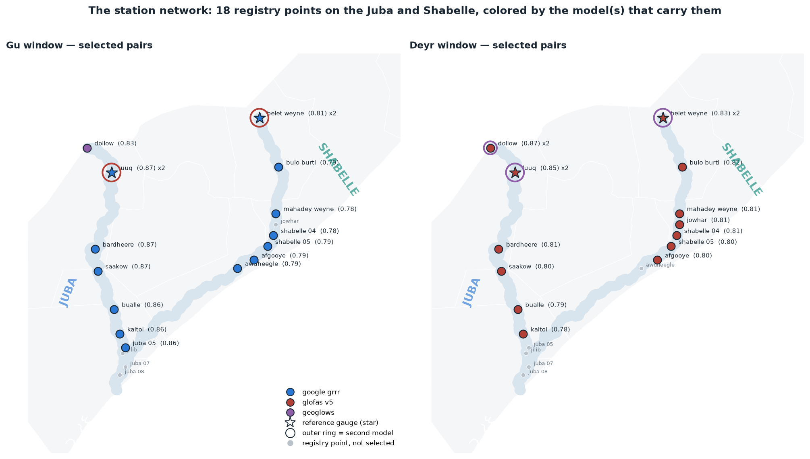
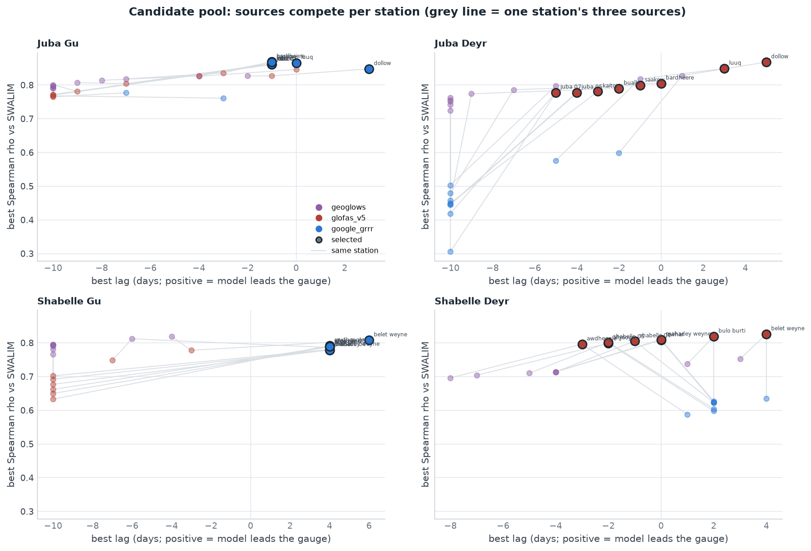
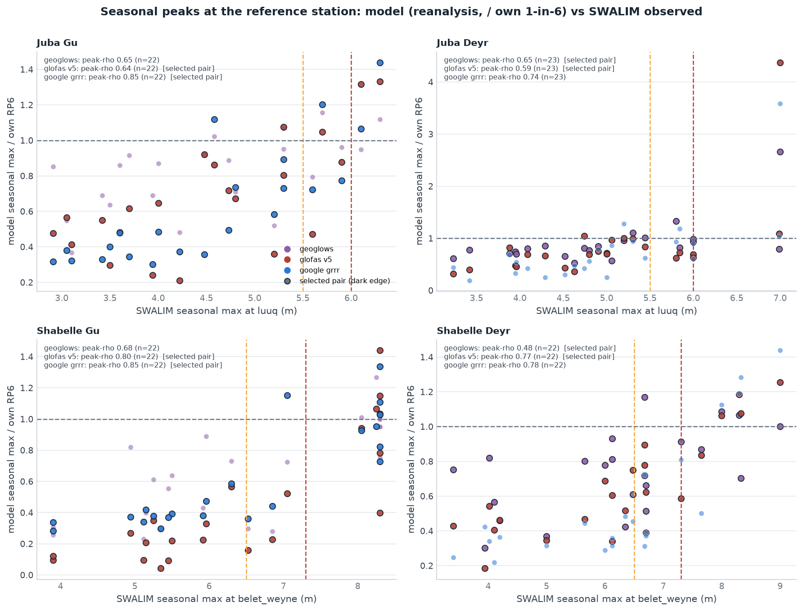
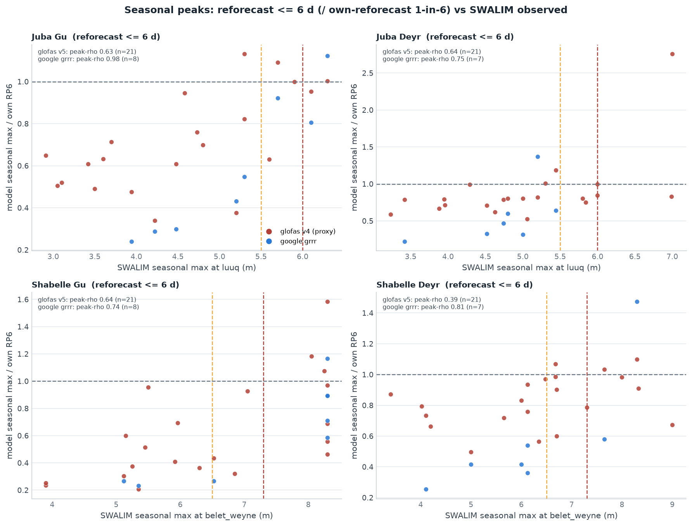
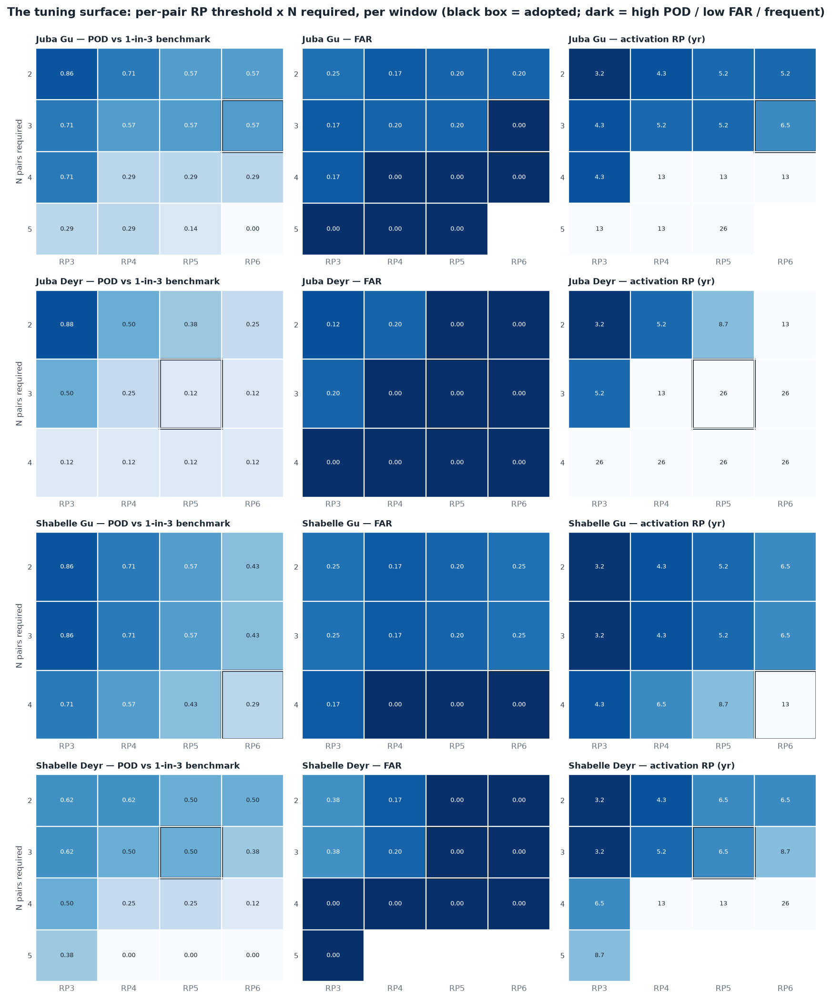
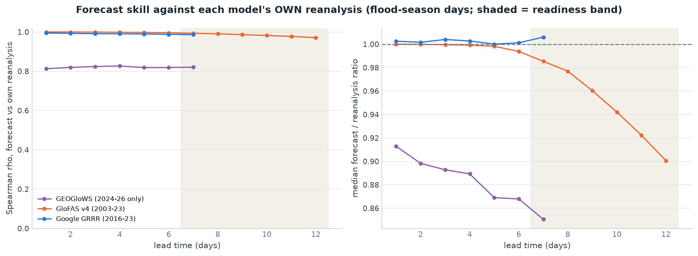
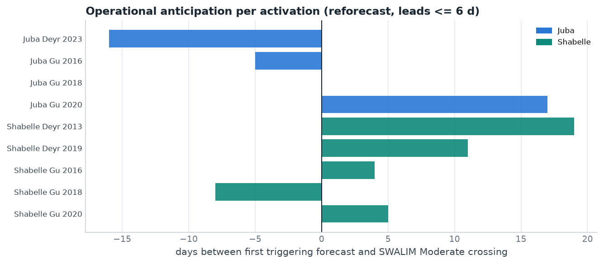

The mechanism at a glance
The trigger is fully forecast-based. SWALIM's river-gauge record is the ground truth the mechanism is calibrated and validated against — it is not a trigger input. Each river basin (Juba, Shabelle) carries one specific trigger per flood season (Gu, rains arriving on the rivers March–May; Deyr, October–December), and each specific trigger is staged:
- Readiness (leads 7–12 days) — GloFAS ensemble-median forecast; releases only the small mobilisation share. GloFAS is the only provider whose forecasts reach past 7 days with a historical archive to validate against.
- Action (leads ≤ 6 days) — a consensus of (station, model) pairs. Pairs compete freely — the same station may carry two models — and the window's voting pool is every pair within 0.10 ρ of its best pair (8–12 pairs per window). Every pair has its own return-period threshold; the trigger activates when at least N of the pool exceed their thresholds on the same forecast valid day.
| window | action trigger (leads ≤ 6 d) | leg RP | readiness (leads 7–12 d) | readiness RP |
|---|---|---|---|---|
| Juba Gu | Google GRRR ×8 + GloFAS v5 ×3 + GEOGloWS: ≥ 9 of 12 pairs over their 1-in-5-yr thresholds | 6.5 yr | GloFAS ens-median: ≥ 5/8 over 1-in-2-yr | 3.7 yr |
| Juba Deyr | GloFAS v5 ×6 + GEOGloWS ×2: ≥ 5 of 8 pairs over their 1-in-4-yr thresholds | 13.0 yr | GloFAS ens-median: ≥ 5/6 over 1-in-2-yr | 4.4 yr |
| Shabelle Gu | Google GRRR ×8 + GloFAS v5: all 9 pairs over their 1-in-5-yr thresholds | 13.0 yr | GloFAS ens-median: ≥ 2/8 over 1-in-3-yr | 3.7 yr |
| Shabelle Deyr | GloFAS v5 ×8 + GEOGloWS ×2: ≥ 8 of 10 pairs over their 1-in-4-yr thresholds | 6.5 yr | GloFAS ens-median: ≥ 5/8 over 1-in-2-yr | 3.1 yr |
Backtested on 1999–2023, each basin activates 6 of 25 years (1-in-4.3, equal by construction), and at least one basin activates in 8 years — overall return period 3.2 years, meeting the ≥ 3-year specification. The activation years are 2006, 2013, 2014, 2016, 2018, 2019, 2020 and 2023 — every one a documented major flood year in Somalia. Per-basin thresholds are nominal (~1-in-4.3–5); the final adjustment belongs to the framework working group.

How the pairs were chosen
Every combination of the 18 monitoring points and the three providers competes on one metric: best-lag Spearman rank correlation between the provider's reanalysis/retrospective discharge and the SWALIM reference-gauge level (Belet Weyne for the Shabelle, Luuq for the Juba), per river and season — the correlations computed in P. Wairimu's notebook 06, against the SWALIM benchmark her notebook 01 established (post-2000 record, official Moderate/High risk levels) and her notebook 05 showed must be primary over FloodScan on the Shabelle. Pairs compete freely (decision 2026-08-25: the goal is the best forecasts on the right basin, and a station may carry two models), under two rules — neither of which knows what a model is:
- Timing guard: pairs whose signal trails the reference gauge by more than 3 days are excluded — a ≤ 6-day trigger cannot spare that anticipation.
- Relative quality floor: the voting pool is every qualifying pair within 0.10 ρ of the window's best pair. No fixed count and no diversity quota — with 25-year records, pairs that close are statistically interchangeable, so all of them get a vote. Pool sizes come out at 8–12 pairs per window.

Multi-model representation is earned, not injected: GEOGloWS clears the floor in three of the four windows — Juba Deyr (Dollow ρ 0.83 at +1 d and Luuq 0.82, top-8 outright once the timing guard removes the trailing GloFAS pairs), Juba Gu (Dollow 0.83, floor 0.77) and Shabelle Deyr (Belet Weyne 0.75 and Bulo Burti 0.74, floor 0.73). In Shabelle Gu it has no pair passing the timing guard (−4 to −10 d) and stays out. An earlier draft used an explicit diversity rule to the same effect; it proved unnecessary and was dropped. The full per-station numbers:
Per-station selection detail (ρ / lag per model, all four windows)
Seasonal peaks: model vs gauge
Daily rank correlation can flatter a model that merely tracks the seasonal cycle. The sharper diagnostic is one point per season-year: the model's seasonal peak against the observed seasonal peak at the reference gauge — does the model rank the years correctly? For display each model's peak is divided by its own 1-in-6 threshold (rank correlation is unaffected by the normalisation), so the quadrants read directly: top-right = the model ran over its own threshold in a year the gauge also ran high.

| window | peak Spearman ρ — reanalysis (n = 21–25) | peak ρ — reforecast ≤ 6 d | |||
|---|---|---|---|---|---|
| GEOGloWS | GloFAS v5 | Google GRRR | GloFAS v4 (proxy) | Google GRRR | |
| Juba Gu | 0.65 | 0.64 | 0.85 | 0.63 | 0.98 |
| Juba Deyr | 0.65 | 0.59 | 0.74 | 0.64 | 0.75 |
| Shabelle Gu | 0.68 | 0.80 | 0.85 | 0.64 | 0.74 |
| Shabelle Deyr | 0.49 | 0.77 | 0.78 | 0.39 | 0.81 |

Thresholds and calibration
Each selected pair gets its threshold from its own model's climatology: the Weibull plotting position of its seasonal maxima (1999–2023) at the target return period. Magnitude bias between models cancels out — each pair is equally likely to exceed its threshold by construction. The same principle carries into operations: we assume bias between reanalysis and forecast for every source (quantified in the next section), so a threshold is only ever applied to the product whose own historical values it was fitted on. To inspect the indicators themselves, year by year, use the indicator explorer. The basin-level search then chooses, per season, the per-pair return period and the consensus count N, subject to: per-basin activation frequency in the 1-in-4.3–6.5 band; maximum coverage of the basin's severe (1-in-5) benchmark years; fewest activations outside the moderate (1-in-3) benchmark set; and, among ties, a consensus fraction near 75%.

The tuning surface
The Nigeria-style grid search (per state there; per basin × season here — the same recipe as P. Wairimu's notebook 08): every (per-pair RP threshold, N pairs required) cell is scored against the seasonal SWALIM benchmark. The adopted cell is not always the best single-window score — it is the best choice subject to the basin-level constraints (equal 1-in-4.3 per basin across the Gu+Deyr union, severe-coverage-first, ≥ 3-yr overall). The surface shows what the neighbors would cost: e.g. Juba Gu could buy POD 0.71 at N=7/12 for one extra activation in 25 years, and Shabelle Deyr's adopted cell sits where FAR turns to zero.

Forecast skill against each model's own reanalysis
The assume-bias-for-all-sources rule, quantified: per model and lead time, how well the forecast reproduces the model's own reanalysis or retrospective — rank correlation (does it track itself?) and the median forecast/reanalysis ratio (is it biased against its own climatology?). Computed per station on flood-season days, median across the 18 stations.

Would it have worked operationally?
The calibration record is reanalysis — a model's afterwards-view of its own past. The operational test replays the historical forecasts: per pair and valid day, the most alarming ≤ 6-day signal (max over issue dates — with mixed providers in one window, a monitoring day combines each provider's latest forecast). Google pairs use their own reforecast (2016–2023); GloFAS v5 pairs the v4 reforecast (2003–2023, ensemble median, thresholds refit on v4's own climatology, since no v5 reforecast exists); GEOGloWS pairs the retrospective as a lead-0 stand-in (hindsight — flagged per window). That forecast skill barely decays from lead 1 to 7 — initial-condition-driven on these slow rivers — is P. Wairimu's notebook 03 finding, and is what makes both lead bands viable at all.
| window | archive | stand-in pairs | reproduces calibration years? | notes |
|---|---|---|---|---|
| Juba Gu | 2016–2023 | 1 | 3/3 — 2016, 2018, 2020 | clean |
| Juba Deyr | 2003–2023 | 2 | 1/2 — catches 2023 (16 d after the Luuq Moderate crossing), misses 2006 | over-fires: adds 2005, 2014, 2015, 2017 — see below |
| Shabelle Gu | 2016–2023 | 0 | 0/2 — misses 2018 and 2020; adds 2016 (severe) | fragile: the all-9-pairs rule rarely completes on forecasts — see below |
| Shabelle Deyr | 2003–2023 | 2 | 1/4 — catches 2019 (+11 d); misses Deyr 2023, 2014, 2006; adds 2013 (+21 d) | the weak window; see the caveat below |

The readiness leg (7–12 days)
GloFAS ensemble-median forecasts at leads 7–12 days (the leads-8-12 reforecast was downloaded specifically for this band), over each window's distinct stations, thresholds on GloFAS v4's own climatology, at a lower bar — readiness releases only the mobilisation share and may activate more often than action. It fully covers the action years for Juba Gu, Juba Deyr and Shabelle Gu at 1-in-3.1–4.4 frequencies. Shabelle Deyr readiness covers 2 of 4 action years — at 7–12 days GloFAS v4 cannot see Deyr-2023-type events at all. Individually the readiness legs sit at 1-in-3.1–4.4, but their union runs ~1-in-1.7 — the working group should see that number explicitly when deciding the mobilisation share.
Return-period bookkeeping
| level | trigger | activations (1999–2023) | RP |
|---|---|---|---|
| individual | Juba Gu action | 4 — 2013, 2016, 2018, 2020 | 6.5 yr |
| individual | Juba Deyr action | 2 — 2006, 2023 | 13.0 yr |
| individual | Shabelle Gu action | 2 — 2018, 2020 | 13.0 yr |
| individual | Shabelle Deyr action | 4 — 2006, 2014, 2019, 2023 | 6.5 yr |
| basin | Juba (Gu or Deyr) | 6 | 4.3 yr |
| basin | Shabelle (Gu or Deyr) | 6 | 4.3 yr |
| overall | action, either basin | 8 | 3.2 yr |
Under all-in funding (the full envelope on any activation, the working assumption in the evidence deck) the effective RP equals the overall RP, 3.2 years. A split structure would raise the effective RP above it; that is a framework-team decision.
Activations, impact and response, year by year
The two-historical-records rule: the trigger record against impact, not just the hazard benchmark. Everything is grouped basin → season, reverse-chronological. The trigger column is the trigger's actual decision variable: the peak number of (station, model) pairs simultaneously over their thresholds that season-year — the cell fills red when it meets the requirement shown in the season header (= the trigger activates). bnch is the SWALIM benchmark class of that season, shaded (sev = 1-in-5, mod = 1-in-3); EM-DAT (purple) is people affected and CERF (blue) the flood allocation (US$), shaded by magnitude, each attributed to the basin(s) named in the event or allocation narrative.
| loading… |
Attribution & caveats. EM-DAT is a floor (entry-criteria bias), split to seasons by start month (Mar–Jun → Gu, Sep–Dec → Deyr); an event naming both rivers is counted under both basins (not split — hover for deaths and the multi-basin flag); events naming neither river (mostly flash floods elsewhere) are excluded. A CERF allocation naming neither river in its narrative is shown under both basins and marked * (they are national riverine-flood responses). Impact columns are context, not a skill score: a formal skill-vs-impact statistic still requires choosing an impact threshold.
Open items before a trigger report
- GloFAS v5 reforecast — re-verify both Deyr legs and the readiness band when EWDS publishes one.
- Operational tuning of Juba Deyr and Shabelle Gu — the proxy over-firing and the all-8-pairs fragility above; trade N against RP within the 1-in-4.3 basin budget using operational data.
- GEOGloWS operational debias — before its votes count live, either SFDC-map its forecasts onto the retrospective climatology (the method from the team's Nepal technical note, fitted on the 2024+ overlap) or refit its thresholds on forecast climatology as the archive grows; validate against whichever Deyr/Gu seasons the archive then covers.
- Version pinning for operations — action thresholds here are v5-climatology (GloFAS pairs), the readiness/backtest thresholds v4-climatology; refit on one consistent operational product before go-live.
- Formal impact-record cross-check — the year-by-year table above is descriptive; a formal statistic requires the working group to fix an impact threshold ("what counts as a year that should have triggered").
- Final threshold adjustment to the working group's exact return-period targets, and the funding-split decision.